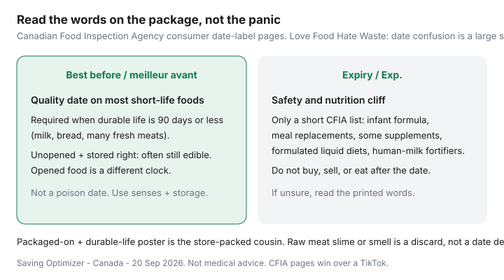

Food & Groceries · Canada
Best-before vs expiry in Canada: stop throwing out safe food
Canadians throw out yogurt, bread, and surplus-app cheese because a printed date felt like a skull and crossbones. Love Food Hate Waste Canada has cited date-label confusion as about 23% of avoidable household waste (Second Harvest research as used on those pages). That fear also keeps people off Flashfood and FoodHero — the apps look like a dare to eat “expired” food.
The Canadian Food Inspection Agency is the source, not a reel. Best before is a quality date. Expiry is a short, serious list. Literacy here is how you stop buying a second jar of sauce and how you use surplus apps without a panic spiral. This is not medical advice and it is not a dare to eat slimy chicken.
Disclosure: No natural affiliate product. Storage containers are an optional offer type if we later add links. Saving Optimizer does not currently claim grocer or surplus-app partnerships. The CFIA pages and your own senses are the tools.
Key takeaways
- Best before / meilleur avant is quality for unopened food stored correctly — not a poison date.
- Expiry / Exp. is a short CFIA list (formula, meal replacements, some supplements). Do not eat those after the date.
- Opened food, leftovers, and raw meat slime are different clocks. When in doubt on meat, discard.
- Date literacy is what makes Flashfood a planned protein, not a fear purchase.
- FIFO plus an eat-first shelf beats a pretty fridge. Shop the fridge before Flipp.
Legal and label basics in plain language
CFIA consumer pages (reviewed 20 Sep 2026): a best-before date tells you how long a properly stored unopened food should keep its freshness, flavour, texture, and nutritional quality. Foods with a durable life of 90 days or less generally need a best-before or a packaged-on date (fresh fruit and vegetables and some other products excepted). Foods that last longer than 90 days — many cans, dry pasta, items sold frozen — are not required to show a best-before, though manufacturers often add one anyway, which feeds confusion.
You can usually buy and eat foods after a best-before date if they were stored correctly. Quality may drop. Health Canada and CFIA both warn that some foods can become unsafe without obvious spoilage — treat highly perishable items with more caution than dry cookies.
Expiry dates are not the same thing. They appear on foods with strict compositional and nutritional specifications. After the date, the product may not meet the label’s nutrient claims and should not be eaten. It is also illegal to sell those foods past the expiry date.
Packaged on / empaqueté le shows up on store-packed short-life foods and must travel with durable-life information on the package or a poster. Together they are still a quality tool.

Foods where dates matter most
| Item | Typical label | Household rule |
|---|---|---|
| Infant formula, meal replacements, listed supplements | Expiry | Do not use after the date. No debate. |
| Raw meat and poultry | Best before or packaged-on | Fridge days are short. Freeze or cook promptly. Slimy or foul-smelling: discard. |
| Milk, yogurt, cheese | Best before | Unopened and stored cold: often fine past the date. Opened yogurt is a smell-and-look check. |
| Bread, dry goods, cans | Best before, often voluntary on long-life | Stale is not poison. Mouldy bread is a discard (do not scrape “the good parts” as a habit). |
| Opened deli meat | Printed date plus open clock | Common food-safety guidance: 3–5 days in the fridge once opened, even if the print is later. |
Sensory checks that are still appropriate
CFIA and Health Canada are clear that you cannot always smell danger. That is why expiry-listed medical nutrition products are a hard no, and why raw chicken that “looks fine” after a week in a warm fridge is not a savings project.
Still appropriate: look, smell, and texture on everyday perishables you stored correctly. Sour milk that split, slimy poultry, blown cans, visible mould on soft cheese you are not specifically keeping as a rind culture — bin them. Dry pasta a month past a voluntary best-before is usually dinner. The waste-systems guide is the sibling page; this page is the label decoder.
When senses lose: infant feeding products, anyone immunocompromised in the household, a package that sat in the car, or a leak. Then the date is not the interesting fact. The handling is.
How this unlocks Flashfood confidence
Chooser apps exist because stores have surplus approaching a quality date. If you treat every best-before as expiry, Flashfood looks reckless and you will either skip useful protein or buy it and throw it out — the worst stack.
Confident use: you can name the dinner or the freeze plan, the package is intact, and pickup is on a trip you were taking. A yogurt four-pack for a one-person fridge is still a trap. A chicken tray you will portion tonight is the point of the Flashfood guide. FoodHero is the same literacy in Empire-heavy cities.
Fridge organization to eat older food first
- Create an eat-first bin or shelf at adult eye level. Leftovers and short-date dairy live there, not in the door graveyard.
- FIFO: new milk behind old milk. New tortillas behind the open sleeve.
- Label leftovers with the cook date. Health Canada leftover pages: many cooked dishes 3–4 days in the fridge.
- Put leftover night on the calendar — see the family meal matrix if more than one adult is eating.
- Shop the fridge before you open Flipp. That is step one of the weekly grocery system.
When to discard without second guessing
- Anything with an expiry date that has passed.
- Raw meat that is slimy, green-tinged, or foul — date is irrelevant.
- Food left in the temperature danger zone (4–60 °C) more than two hours, per Health Canada leftover tips.
- Blown, badly rusted, or leaking cans.
- You already logged this item as waste twice this month. Stop buying that SKU.
Guilt does not close the crisper. A label you can read, a shelf you can see, and a surplus app you use as planned diversion do. Date-stamp your own 30-day waste log; the national $1,300 household sketch is a ceiling, not your receipt.
Sources & date stamps
- CFIA, “Understanding the date labels on your food” / “Understanding the dates on our food” (best-before vs expiry vs packaged-on; 90-day rule; expiry list). Reviewed 20 Sep 2026.
- Health Canada / Canada.ca leftover and safe-storage pages: danger zone, leftover fridge days, “when in doubt, throw it out.”
- Love Food Hate Waste Canada: planning and date-label confusion (~23% of avoidable waste via Second Harvest research as cited there); ~$1,300 household edible waste sketch.
- Flashfood product positioning as used in our surplus guides — household waste is still your problem if you overbuy.
Frequently asked questions
Can I eat food after the best-before date in Canada?
Usually yes if it was stored properly and the package says best before, not expiry. The CFIA says best-before dates are about quality for unopened food — freshness, taste, nutrition — not an automatic safety cliff. Use your senses on perishables, and throw out slimy or foul-smelling meat.
What Canadian foods have expiry dates?
Expiry dates are required only on a short CFIA list with strict nutrition specs — infant formula, meal replacements, some nutritional supplements, formulated liquid diets, and human-milk fortifiers. Do not buy, sell, or eat those after the date. Yogurt and milk almost always show best before.
Does a best-before date still apply after I open the package?
The official date is about unopened food stored as directed. Once opened, contamination and air change the clock — sliced meat is a 3-5 day fridge product in common food-safety guidance, even if the printed date is later. Date leftovers yourself.
Should I skip Flashfood if the date is close?
Not automatically. Flashfood exists because stores have short remaining quality life. If you will eat or freeze the item on a trip you were taking, a close best-before can be the point. If you treat dates as poison, you will either waste the app or waste the food.
How should I organize the fridge so older food gets eaten?
Eat-first shelf or bin at eye level, new milk behind old milk (FIFO), leftovers labelled with the cook date, and a leftover night on the calendar. Shop the fridge before Flipp.